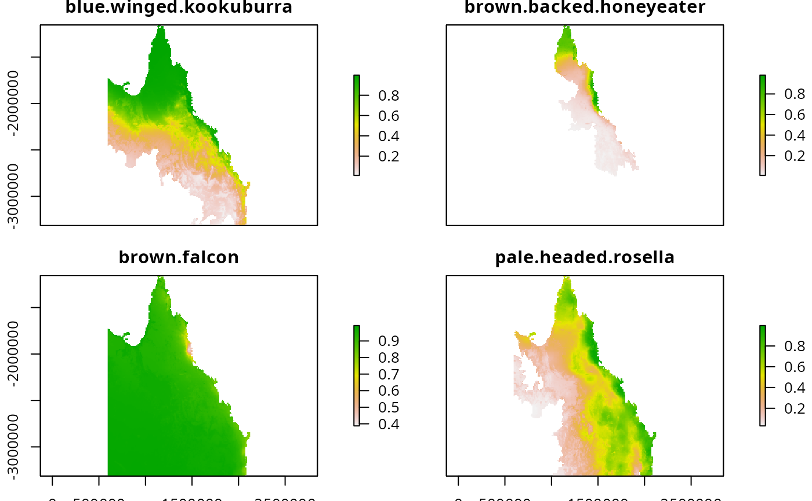
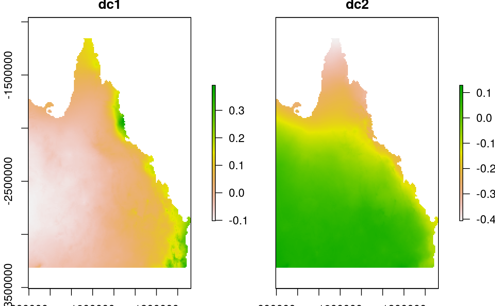

This dataset contains data to generate example prioritizations for the pale-headed Rosella (Platycercus adscitus) in Queensland, Australia.
cs_pus cs_space cs_spp
Format
cs_pus: SpatialPolygonsDataFrame, cs_spp: RasterLayer-class, cs_space: RasterStack-class.
Details
The objects in the dataset are listed below.
- cs_pus
SpatialPolygonsDataFrameplanning units. The units were generated as \(30km^2\) squares across the species' range, and then clipped to the Queensland, Australia (using data obtained from the Australia Bureau of Statistics; http://www.abs.gov.au/ausstats/abs@.nsf/mf/1259.0.30.001?OpenDocument). They were then overlaid with Australia's protected area network (obtained from the World Database on Protected Areas (WDPA) at http://www.protectedplanet.net/). This attribute table has 3 fields. Theareafield denotes the amount of land encompassed by each unit, thecostfield is set to 1 for all units, and thestatusfield indicates if 50% or more of the units' extent is covered by protected areas.- cs_spp
RasterLayer-classprobability distribution map for the P. adscitus clipped to Queensland, Australia. This map was derived from records obtained from The Atlas of Living Australia (http://ala.org.au/) .
- cs_space
stackdescribing broad-scale climate variation across Queensland (obtained from http://www.worldclim.org/, and resampled to \(10km^2\) resolution).
Examples
plot(cs_pus)plot(cs_spp)plot(cs_space)